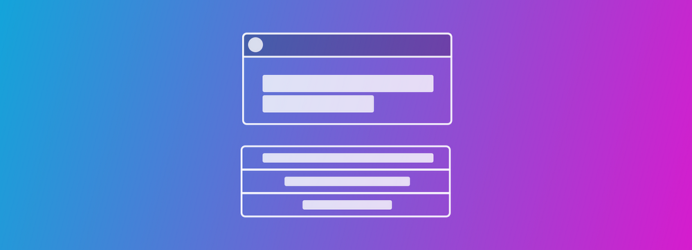

Push Notifications, the good, the bad, and the wtf could u not (UX Collective)

Push notifications are incredibly handy for giving you important information. Your flight being delayed? Really helpful to know. Getting a notification for everything one of the Avengers is posting about? Probably not.
Just like you’re going to ignore or shut down the person who continuously interrupts you, you’re more likely to do the same to an app that bothers you with trivial information.
Push notifications are interruptive and we must be careful in our use of them if we are to retain our customers’ happiness and trust. A push notification’s frequency, type, and priority can make or break someone’s faith in your app.
What you should do #
Push notifications are at their best when they are timely and helpful. Consider these tips when you’re figuring out what kinds of notifications to send.
Consider how your app can help #
Amazon does a great job of communicating your order’s status: I know when it’s shipped, out for delivery, and when it’s been delivered. I also know if there’s been a problem with the delivery, and I can act quickly to fix the problem.
If you’re a retailer or hospital, you know how much weather emergencies affect people getting to work. Letting an employee know you’re closed and they don’t need to come in could save them from an accident.
Be judicious #
While the occasional notification about a sale is acceptable, we must approach this with caution. Too many notifications and people will lose the goodwill we’ve built up with them.
It may also end up affecting your app’s ratings. People are 8x more likely to download an unknown app with high ratings, so it’s important to not abuse the privilege to send someone a push notification.
Add actions #
Consider how you can save someone time by letting them deal with a notification on the spot. Apple lets you use two actions in a notification. Android allows “many,” leaving it up to you how many to add. My advice is stick to two, especially if you’re developing for iOS and Android at the same time.
Here are a few examples:
- Replying to a message in the notification.
- Accepting an event invitation or snoozing an event alert.
- Tuning into your security camera feed or sound the alarm.
- Silencing a smoke alarm.
Give people a choice #
As your notification system evolves, make sure to give people the ability to choose what kinds of notifications they want as well as when they want to get them. This protects both your goodwill and App Store rating.
For example, people may not want to know about every promotion you’re running but do want to know when their order ships. Give them that choice.
People also may not want notifications for certain apps when they’re at work, traveling, or at home. For example, I don’t want to get push notifications from my work Slack after-hours unless it’s important; it might be helpful to get them during the day, however.
People may also want quiet hours. I haven’t seen an app that quiets itself when I’m at home or work, but it’s certainly on my wish list.
What you should avoid #
While iOS requires users to grant permission to send push notifications, Android doesn’t. This poses some interesting challenges in which we could be bugging someone without them really wanting to be bothered.
Annoying someone into opening the app #
Don’t send needly interruptive notifications to people who’ve never opened your app. It’s not a good look—this erodes someone’s trust that you’ll respect their time and attention.
Also avoid begging users to re-open your app if it’s been inactive for some time. No one wants to look desperate for attention, neither should your app.
Allowing destructive actions #
Since notifications are dealt with in seconds, avoid including any kind of destructive action. Notifications can be dismissed accidentally—imagine the confusion and frustration accidentally deleting a message could bring.
Sending low-value notifications #
Avoid sending notifications that don’t have anything to offer. While you might appreciate a customer visiting your store and want to thank them, it’s a bad idea to send a notification for that.
Incorrectly prioritizing notifications #
Android lets you set priority levels for notifications and provides five options for you:
- Max: these are the most important kinds of notifications. Use these for time-sensitive or critical alerts. This appears on someone’s screen no matter what they’re doing.
- High: most communication apps use this for messages.
- Default: your regular ol’ notification. Good for letting you know that someone’s order is processing or shipped.
- Low: for relevant information that’s not especially time-sensitive, like for earnings reports on companies you follow.
- Min: the lowest priority. For nearby points of interest or weather.
Most of your notifications should be in the default category unless you have good reason to make it otherwise. Google allows for the min level, but consider whether or not you really need that notification if you’re prioritizing it that low.
People who overstate the importance or urgency of what they’re saying are going to get ignored — the same principle applies here. You have a certain amount of trust with a person, mis-labeling your notifications is a great way to ruin that trust.
Wrapping Up #
If you’d like to read more, you can head over to the iOS Human Interface Guidelines or Material Design to read more. I recommend starting with Material’s guidelines there since they’re more descriptive.
Overall, treat notifications like the interruptions they are. Be respectful and only send them when necessary.